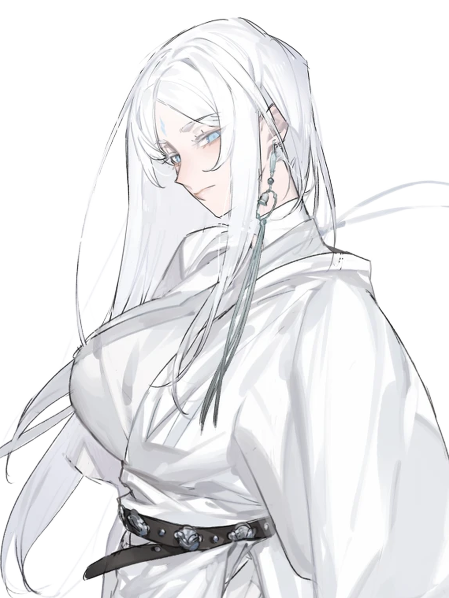

乙巳年 九月 初五
宜入定 · 忌急躁
时辰 · 戌

修士档案 · 本命卷
白衣修士
白发如雪，浅蓝眸光，额间一点蓝纹。久居洞府，善吐纳，好藏经。
今日功课
吐纳 · 卯时完成
静坐 · 午时进行中
抄经 · 戌时待办
修行进度
灵气炼气 12%
熟练度吐纳诀 三级
体魄康健
预览说明：上方按钮切换背景模式（B01 原图 / 压暗两档 / 现有深色天幕对照）。档案区为 P01 面板边框 + P02 淡墨底衬 + 主角透明立绘；两张卡片为 T01 浅色纸本 / T02 深色纸本。重点看 B01 是否会抢字、山水明暗与卡片协调性。